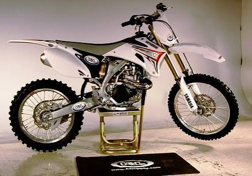

Dirtbike maintenance

Most people would rather ride than wrench on their bikes, but there are some dirt bike maintenance tasks that should never be skipped. A dirty and poorly maintained bike will inevitably fail, leaving you stranded in the best-case scenario. Routine maintenance ensures your dirt bike works correctly, which helps you stay safe and retain the value of your investment.
The level of maintenance required for a dirt bike depends on how frequent and intense you use it. If you are riding daily on tracks or terrains that are extremely challenging, then you should expect high maintenance of your dirt bike. On the other hand, if you’re riding the dirt bike conservatively or using it just on occasion, naturally, you can settle for low maintenance.Nevertheless, regardless of how long or hard you ride your dirt bike, it is still recommended to inspect it after every use. Off-road riding presents hazards at least twice as much as street riding is enough reason to have routine checkups on your bike.
A dirt bike has the same basic maintenance needs as a regular motorcycle, but the frequency of servicing varies. Moreover, replacements of several parts are after a shorter period of use. Perhaps this comparison is why people are convinced that dirt bikes are high maintenance. There are a good amount of stuff that you need to replace frequently.